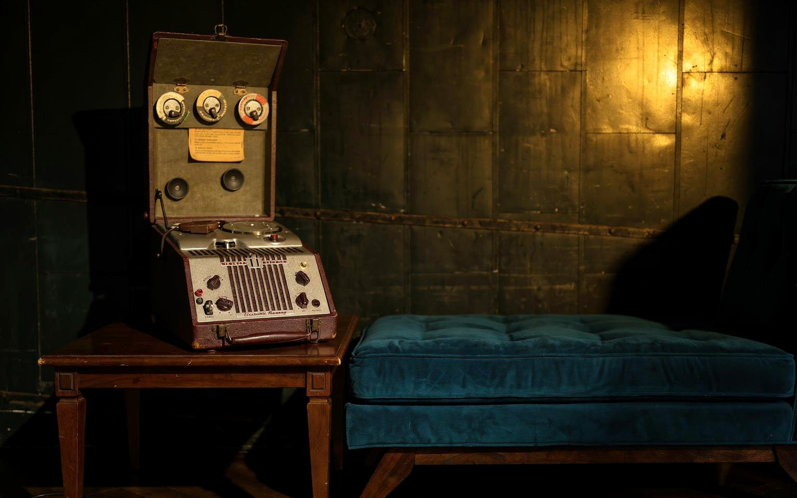
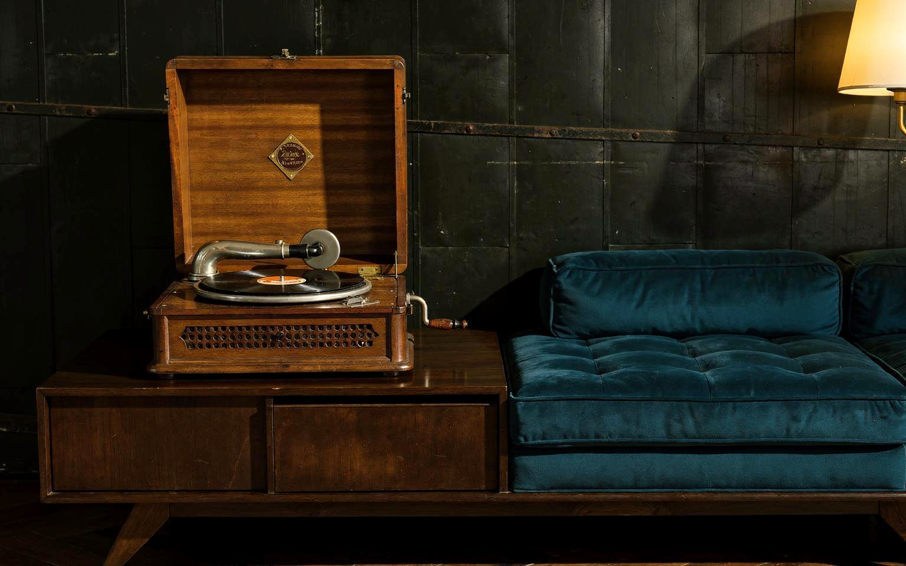
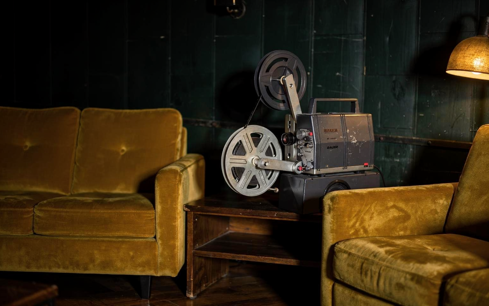
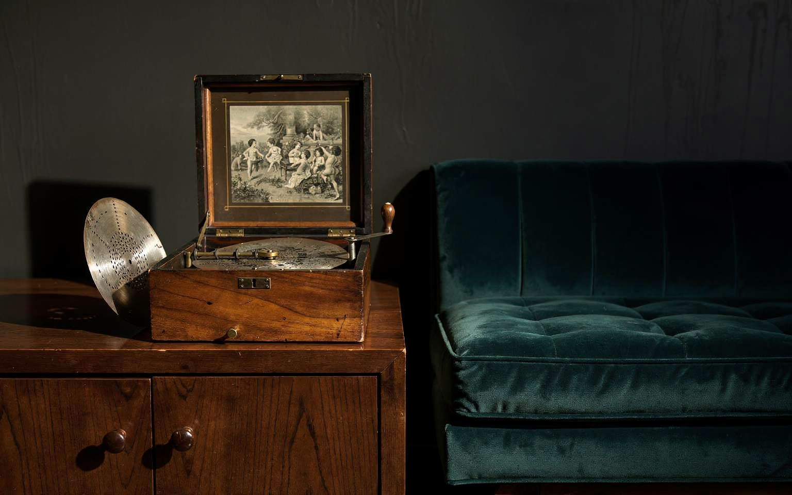
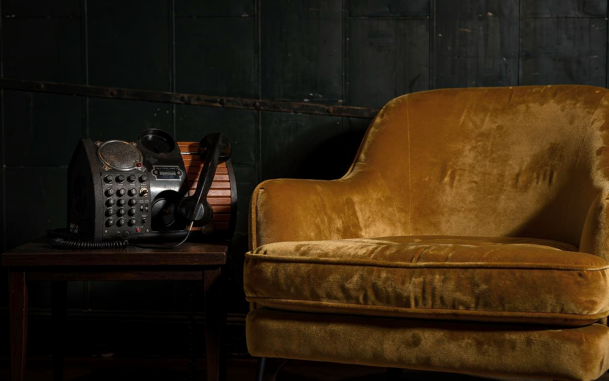
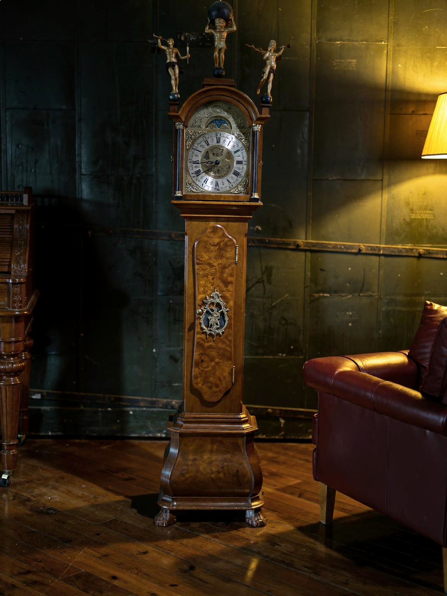
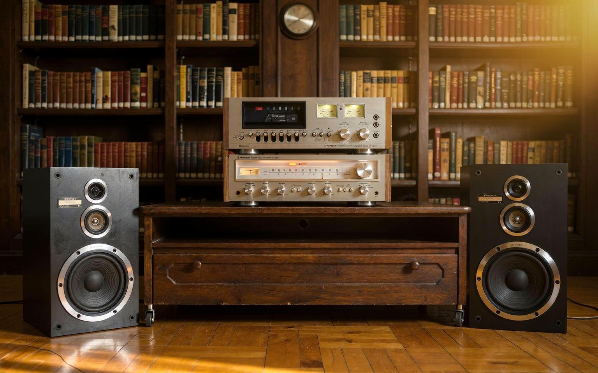

The memory of machines.
A personal technology, sound, photography and cinema collection of machines that wrote, calculated, recorded, projected and played. It is a secondary part of this site.

Brother Super PowerNote PN-8500MDS
A dedicated meeting of keyboard, screen and the written page.
Open to offers View record →
Commodore Amiga 500
An emblem of personal computing’s creative relationship with games, sound and images.
Open to offers View record →
Polaroid Automatic 340 Land Camera
Folding bellows and the anticipation of a photograph taking shape in the hand.
Open to offers View record →
Reuge Music Box
A melody whose mechanism remains visible beneath glass.
Open to offers View record →
Revox B77
Reels, meters and direct controls make the path of sound visible.
Open to offers View record →
Webster Chicago Electronic Memory
An early interpretation of memory, expressed through reels and a microphone.
Open to offers View record →
Pathé-labelled Portable Gramophone
A mechanical listening ritual that begins with opening the lid.
Open to offers View record →
Bauer Film Projector
The mechanical route a moving image takes before reaching the screen.
Open to offers View record →
Polyphon 28 cm Disc Music Box
A mechanical music object that stores melody in the perforated pattern of a 28-centimetre metal disc.
Open to offers View record →
Field Phone Mark II
A telephone drawing on the visual language of earlier communication equipment.
Open to offers View record →
Facit Mechanical Calculator for Jewellers
A Facit that turns numbers into keys, levers and geared movement, with a history of use in jewellery work.
Open to offers View record →
Pioneer S-Z85D Speaker Pair
Two separate cabinets considered together as a stereo listening pair.
Open to offers View record →
Lubitel 2
Twin lenses, a square image and an invitation to approach composition more slowly.
Open to offers View record →
Zenit 11 with Helios-44M-4
An analogue pairing that places framing, focus and exposure in the photographer’s hands.
Open to offers View record →
Longcase Floor Clock
A timepiece whose presence shapes the room as well as marking its hours.
Collection display · Not open to offers View record →
Pioneer Audio System: CT-F6161 + SX-550
A system bringing cassette recording, radio reception and amplification together in two classic Pioneer components.
Open to offers View record →
Vitalie Grișciuc: Surreal Composition with Musical Instruments
A signed graphic composition dated 1998, transforming musical instruments into dreamlike figures.
Open to offers View record →